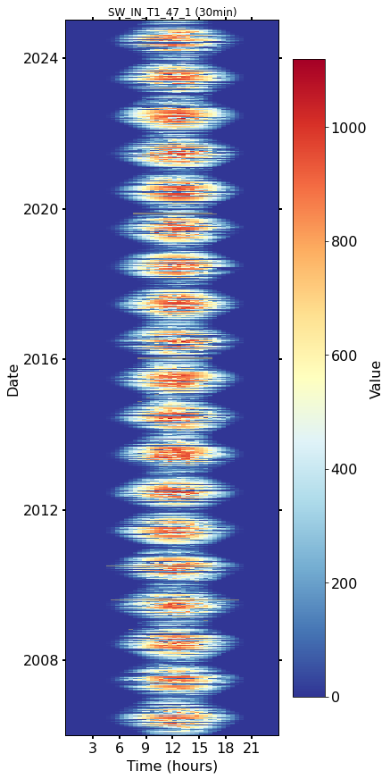
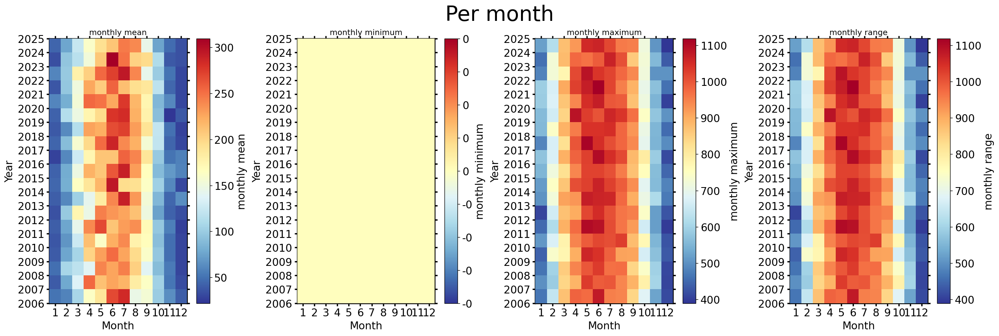
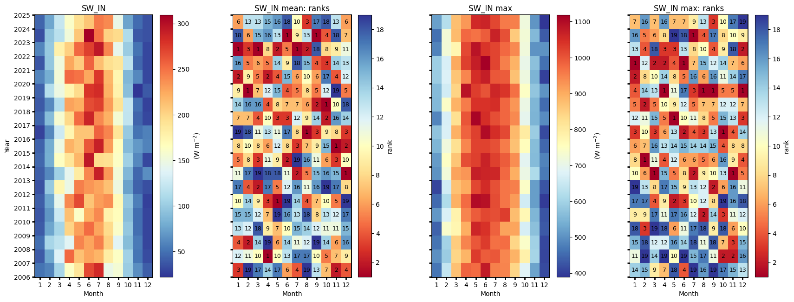
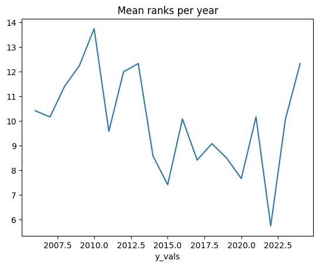
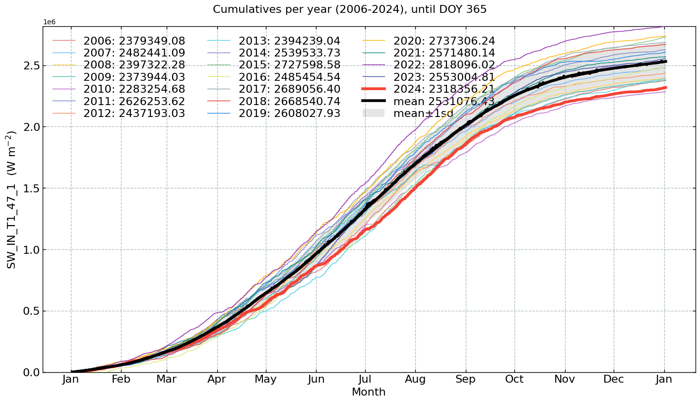
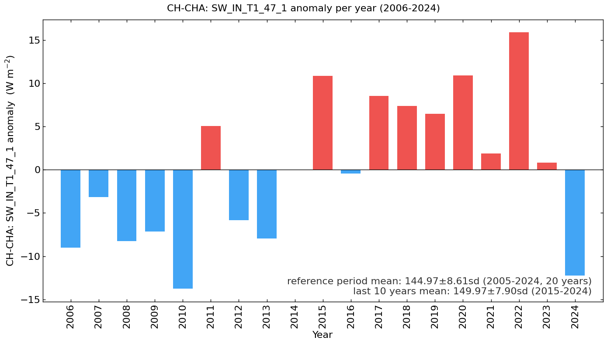

Meteo: Shot-wave incoming radiation (SW_IN) (2006-2024)#
Author: Lukas Hörtnagl (holukas@ethz.ch)
Variable#
varname = 'SW_IN_T1_47_1'
var = "SW_IN" # Name shown in plots
units = r"($\mathrm{W\ m^{-2}}$)"
Imports#
import importlib.metadata
import warnings
from datetime import datetime
from pathlib import Path
import pandas as pd
import matplotlib.pyplot as plt
import matplotlib.gridspec as gridspec
import diive as dv
from diive.core.io.files import save_parquet, load_parquet
from diive.core.plotting.cumulative import CumulativeYear
from diive.core.plotting.bar import LongtermAnomaliesYear
warnings.filterwarnings(action='ignore', category=FutureWarning)
warnings.filterwarnings(action='ignore', category=UserWarning)
version_diive = importlib.metadata.version("diive")
print(f"diive version: v{version_diive}")
diive version: v0.87.1
Load data#
SOURCEDIR = r"../10_METEO"
FILENAME = r"12.3_METEO_GAPFILLED_2004-2024.parquet"
FILEPATH = Path(SOURCEDIR) / FILENAME
df = load_parquet(filepath=FILEPATH)
keeplocs = (df.index.year >= 2006) & (df.index.year <= 2024)
df = df[keeplocs].copy()
df
Loaded .parquet file ..\10_METEO\12.3_METEO_GAPFILLED_2004-2024.parquet (0.060 seconds).
--> Detected time resolution of <30 * Minutes> / 30min
| LW_IN_T1_47_1 | PA_T1_47_1 | PPFD_IN_T1_47_1 | RH_T1_47_1 | SW_IN_T1_47_1 | TA_T1_47_1 | SW_IN_T1_47_1_gfXG | TA_T1_47_1_gfXG | PPFD_IN_T1_47_1_gfXG | |
|---|---|---|---|---|---|---|---|---|---|
| TIMESTAMP_MIDDLE | |||||||||
| 2006-01-01 00:15:00 | 330.969940 | 92.024002 | 0.0 | 98.403702 | 0.0 | 1.209000 | 0.0 | 1.209000 | 0.0 |
| 2006-01-01 00:45:00 | 330.439697 | 91.990997 | 0.0 | 98.403702 | 0.0 | 1.007000 | 0.0 | 1.007000 | 0.0 |
| 2006-01-01 01:15:00 | NaN | 91.971001 | 0.0 | 98.303704 | 0.0 | 1.097000 | 0.0 | 1.097000 | 0.0 |
| 2006-01-01 01:45:00 | 331.401764 | 91.951004 | 0.0 | 98.403702 | 0.0 | 1.297000 | 0.0 | 1.297000 | 0.0 |
| 2006-01-01 02:15:00 | 331.160370 | 91.934006 | 0.0 | 98.403702 | 0.0 | 1.331000 | 0.0 | 1.331000 | 0.0 |
| ... | ... | ... | ... | ... | ... | ... | ... | ... | ... |
| 2024-12-31 21:45:00 | 232.595527 | 94.211806 | 0.0 | 87.254008 | 0.0 | -0.504794 | 0.0 | -0.504794 | 0.0 |
| 2024-12-31 22:15:00 | 232.609777 | 94.189013 | 0.0 | 87.430236 | 0.0 | -0.296828 | 0.0 | -0.296828 | 0.0 |
| 2024-12-31 22:45:00 | 232.345020 | 94.169525 | 0.0 | 89.787920 | 0.0 | -0.392922 | 0.0 | -0.392922 | 0.0 |
| 2024-12-31 23:15:00 | 234.211100 | 94.168413 | 0.0 | 81.809355 | 0.0 | 0.792661 | 0.0 | 0.792661 | 0.0 |
| 2024-12-31 23:45:00 | 231.760533 | 94.170793 | 0.0 | 88.311314 | 0.0 | -0.422600 | 0.0 | -0.422600 | 0.0 |
333120 rows × 9 columns
series = df[varname].copy()
series
TIMESTAMP_MIDDLE
2006-01-01 00:15:00 0.0
2006-01-01 00:45:00 0.0
2006-01-01 01:15:00 0.0
2006-01-01 01:45:00 0.0
2006-01-01 02:15:00 0.0
...
2024-12-31 21:45:00 0.0
2024-12-31 22:15:00 0.0
2024-12-31 22:45:00 0.0
2024-12-31 23:15:00 0.0
2024-12-31 23:45:00 0.0
Freq: 30min, Name: SW_IN_T1_47_1, Length: 333120, dtype: float64
xlabel = f"{var} ({units})"
xlim = [series.min(), series.max()]
Stats#
Overall mean#
_yearly_avg = series.resample('YE').mean()
_overall_mean = _yearly_avg.mean()
_overall_sd = _yearly_avg.std()
print(f"Overall mean: {_overall_mean} +/- {_overall_sd}")
Overall mean: 144.96503741344142 +/- 8.608602956557682
Yearly means#
series.resample('YE').mean()
TIMESTAMP_MIDDLE
2006-12-31 135.939501
2007-12-31 141.805157
2008-12-31 136.728011
2009-12-31 137.843690
2010-12-31 131.191375
2011-12-31 150.020200
2012-12-31 139.144684
2013-12-31 137.017228
2014-12-31 144.983657
2015-12-31 155.818257
2016-12-31 144.510632
2017-12-31 153.484954
2018-12-31 152.331358
2019-12-31 151.435834
2020-12-31 155.872297
2021-12-31 146.824263
2022-12-31 160.850230
2023-12-31 145.794347
2024-12-31 132.740037
Freq: YE-DEC, Name: SW_IN_T1_47_1, dtype: float64
Monthly averages#
seriesdf = pd.DataFrame(series)
seriesdf['MONTH'] = seriesdf.index.month
seriesdf['YEAR'] = seriesdf.index.year
monthly_avg = seriesdf.groupby(['YEAR', 'MONTH'])[varname].mean().unstack()
monthly_avg
| MONTH | 1 | 2 | 3 | 4 | 5 | 6 | 7 | 8 | 9 | 10 | 11 | 12 |
|---|---|---|---|---|---|---|---|---|---|---|---|---|
| YEAR | ||||||||||||
| 2006 | 50.899051 | 58.722736 | 106.317192 | 162.769202 | 189.103795 | 268.566624 | 284.475316 | 146.286217 | 155.189567 | 100.150799 | 64.252037 | 40.742373 |
| 2007 | 39.825179 | 77.110025 | 135.987100 | 253.702291 | 212.135527 | 227.360596 | 219.522755 | 182.137087 | 163.059730 | 103.842508 | 51.798866 | 33.005676 |
| 2008 | 48.027879 | 106.239409 | 117.438274 | 139.057256 | 241.774568 | 227.176324 | 243.220083 | 203.113396 | 139.387541 | 90.250120 | 53.999669 | 29.605070 |
| 2009 | 39.537355 | 76.455523 | 105.414743 | 200.706655 | 229.433903 | 252.546844 | 227.345487 | 196.290979 | 160.682545 | 96.251005 | 48.490726 | 29.682786 |
| 2010 | 37.227410 | 67.457293 | 126.035488 | 213.073504 | 161.499327 | 222.754495 | 239.540399 | 176.939965 | 167.063098 | 91.224560 | 48.279606 | 28.940100 |
| 2011 | 40.045098 | 76.125026 | 143.873194 | 239.485702 | 269.005390 | 209.502899 | 230.267809 | 236.678244 | 170.655131 | 96.865746 | 56.093205 | 27.286685 |
| 2012 | 34.772823 | 97.623528 | 174.426550 | 146.489266 | 243.958609 | 233.521002 | 226.440464 | 212.188406 | 149.568234 | 73.956370 | 42.192407 | 33.467133 |
| 2013 | 40.008816 | 60.714161 | 102.239948 | 142.963816 | 183.008096 | 240.358686 | 290.239942 | 232.297106 | 153.324410 | 86.207134 | 44.734129 | 63.983770 |
| 2014 | 45.105636 | 81.426023 | 163.471591 | 189.202980 | 217.711388 | 294.751177 | 195.611411 | 193.154618 | 162.935567 | 102.434049 | 61.204169 | 30.687367 |
| 2015 | 42.647671 | 79.779470 | 148.627451 | 220.482235 | 209.283441 | 262.058698 | 290.020636 | 229.934124 | 166.635166 | 88.526500 | 70.027535 | 57.957903 |
| 2016 | 28.495295 | 60.516284 | 126.481138 | 174.018331 | 210.238603 | 210.514726 | 256.641640 | 241.095892 | 188.522970 | 97.610462 | 50.726758 | 57.771249 |
| 2017 | 43.287703 | 90.370013 | 157.229064 | 197.213344 | 252.457034 | 287.077811 | 239.670439 | 221.172415 | 154.763591 | 120.414591 | 43.891647 | 30.389918 |
| 2018 | 37.885127 | 61.582151 | 113.197964 | 227.988522 | 222.078713 | 267.702677 | 272.618518 | 230.696239 | 191.190187 | 120.990314 | 49.198602 | 28.259290 |
| 2019 | 42.236491 | 113.767870 | 148.763149 | 175.596706 | 196.894817 | 279.076977 | 282.542682 | 221.527967 | 177.367912 | 91.534162 | 21.901103 | 37.987930 |
| 2020 | 59.350377 | 81.074998 | 154.084398 | 253.454911 | 249.777637 | 225.567435 | 276.231263 | 217.614880 | 173.808747 | 86.153202 | 61.039162 | 30.400444 |
| 2021 | 37.137552 | 97.099087 | 150.740700 | 225.867687 | 205.033384 | 255.626630 | 213.779638 | 194.454147 | 187.962766 | 117.440944 | 45.184148 | 30.390747 |
| 2022 | 59.536808 | 98.149522 | 178.366098 | 203.498698 | 253.611379 | 272.680898 | 294.516460 | 240.028843 | 144.042191 | 99.652736 | 50.471514 | 30.460197 |
| 2023 | 34.255274 | 94.977668 | 116.150278 | 152.859156 | 209.189453 | 309.442907 | 249.589123 | 202.361234 | 196.844986 | 110.799587 | 37.855937 | 34.773226 |
| 2024 | 44.343884 | 76.217271 | 122.114467 | 160.926099 | 193.128574 | 209.619923 | 245.619367 | 239.003301 | 144.914168 | 75.141472 | 46.783186 | 35.197507 |
Heatmap plots#
Half-hourly#
fig, axs = plt.subplots(ncols=1, figsize=(6, 12), dpi=72, layout="constrained")
dv.heatmapdatetime(series=series, ax=axs, cb_digits_after_comma=0).plot()

Monthly#
fig, axs = plt.subplots(ncols=4, figsize=(21, 7), dpi=120, layout="constrained")
fig.suptitle(f'Per month', fontsize=32)
dv.heatmapyearmonth(series_monthly=series.resample('M').mean(), title="monthly mean", ax=axs[0], cb_digits_after_comma=0, zlabel="monthly mean").plot()
dv.heatmapyearmonth(series_monthly=series.resample('M').min(), title="monthly minimum", ax=axs[1], cb_digits_after_comma=0, zlabel="monthly minimum").plot()
dv.heatmapyearmonth(series_monthly=series.resample('M').max(), title="monthly maximum", ax=axs[2], cb_digits_after_comma=0, zlabel="monthly maximum").plot()
_range = series.resample('M').max().sub(series.resample('M').min())
dv.heatmapyearmonth(series_monthly=_range, title="monthly range", ax=axs[3], cb_digits_after_comma=0, zlabel="monthly range").plot()

Monthly ranks#
# Figure
fig = plt.figure(facecolor='white', figsize=(17, 6))
# Gridspec for layout
gs = gridspec.GridSpec(1, 4) # rows, cols
gs.update(wspace=0.35, hspace=0.3, left=0.03, right=0.97, top=0.97, bottom=0.03)
ax_mean = fig.add_subplot(gs[0, 0])
ax_mean_ranks = fig.add_subplot(gs[0, 1])
ax_max = fig.add_subplot(gs[0, 2])
ax_max_ranks = fig.add_subplot(gs[0, 3])
params = {'axlabels_fontsize': 10, 'ticks_labelsize': 10, 'cb_labelsize': 10}
dv.heatmapyearmonth_ranks(ax=ax_mean, series=series, agg='mean', ranks=False, zlabel=f"{units}", cmap="RdYlBu_r", show_values=False, **params).plot()
hm_mean_ranks = dv.heatmapyearmonth_ranks(ax=ax_mean_ranks, series=series, agg='mean', **params)
hm_mean_ranks.plot()
dv.heatmapyearmonth_ranks(ax=ax_max, series=series, agg='max', ranks=False, zlabel=f"{units}", cmap="RdYlBu_r", show_values=False, **params).plot()
dv.heatmapyearmonth_ranks(ax=ax_max_ranks, series=series, agg='max', **params).plot()
ax_mean.set_title(f"{var}", color='black')
ax_mean_ranks.set_title(f"{var} mean: ranks", color='black')
ax_max.set_title(f"{var} max", color='black')
ax_max_ranks.set_title(f"{var} max: ranks", color='black')
ax_mean.tick_params(left=True, right=False, top=False, bottom=True,
labelleft=True, labelright=False, labeltop=False, labelbottom=True)
ax_mean_ranks.tick_params(left=True, right=False, top=False, bottom=True,
labelleft=False, labelright=False, labeltop=False, labelbottom=True)
ax_max.tick_params(left=True, right=False, top=False, bottom=True,
labelleft=False, labelright=False, labeltop=False, labelbottom=True)
ax_max_ranks.tick_params(left=True, right=False, top=False, bottom=True,
labelleft=False, labelright=False, labeltop=False, labelbottom=True)
ax_mean_ranks.set_ylabel("")
ax_max.set_ylabel("")
ax_max_ranks.set_ylabel("")
fig.show()

Mean ranks per year#
hm_mean_ranks.hm.get_plot_data().mean(axis=1).plot(title="Mean ranks per year");

Ridgeline plots#
Yearly#
# rp = dv.ridgeline(series=series)
# rp.plot(
# how='yearly',
# kd_kwargs=None, # params from scikit KernelDensity as dict
# xlim=xlim, # min/max as list
# ylim=[0, 0.01], # min/max as list
# hspace=-0.8, # overlap between months
# xlabel=f"{var} ({units})",
# fig_width=5,
# fig_height=9,
# shade_percentile=0.5,
# show_mean_line=False,
# fig_title=f"{var} per year (2005-2024)",
# fig_dpi=72,
# showplot=True,
# ascending=False
# )
Monthly#
# rp.plot(
# how='monthly',
# kd_kwargs=None, # params from scikit KernelDensity as dict
# xlim=xlim, # min/max as list
# ylim=[0, 0.01], # min/max as list
# hspace=-0.6, # overlap between months
# xlabel=f"{var} ({units})",
# fig_width=4.5,
# fig_height=8,
# shade_percentile=0.5,
# show_mean_line=False,
# fig_title=f"{var} per month (2005-2024)",
# fig_dpi=72,
# showplot=True,
# ascending=False
# )
Weekly#
# rp.plot(
# how='weekly',
# kd_kwargs=None, # params from scikit KernelDensity as dict
# xlim=xlim, # min/max as list
# ylim=[0, 0.15], # min/max as list
# hspace=-0.6, # overlap
# xlabel=f"{var} ({units})",
# fig_width=6,
# fig_height=16,
# shade_percentile=0.5,
# show_mean_line=False,
# fig_title=f"{var} per week (2005-2024)",
# fig_dpi=72,
# showplot=True,
# ascending=False
# )
Single years per month#
# uniq_years = series.index.year.unique()
# for uy in uniq_years:
# series_yr = series.loc[series.index.year == uy].copy()
# rp = dv.ridgeline(series=series_yr)
# rp.plot(
# how='monthly',
# kd_kwargs=None, # params from scikit KernelDensity as dict
# xlim=xlim, # min/max as list
# ylim=[0, 0.18], # min/max as list
# hspace=-0.6, # overlap
# xlabel=f"{var} ({units})",
# fig_width=6,
# fig_height=7,
# shade_percentile=0.5,
# show_mean_line=False,
# fig_title=f"{var} per month ({uy})",
# fig_dpi=72,
# showplot=True,
# ascending=False
# )
Single years per week#
# uniq_years = series.index.year.unique()
# for uy in uniq_years:
# series_yr = series.loc[series.index.year == uy].copy()
# rp = dv.ridgeline(series=series_yr)
# rp.plot(
# how='weekly',
# kd_kwargs=None, # params from scikit KernelDensity as dict
# xlim=xlim, # min/max as list
# ylim=[0, 0.3], # min/max as list
# hspace=-0.8, # overlap
# xlabel=f"{var} ({units})",
# fig_width=9,
# fig_height=18,
# shade_percentile=0.5,
# show_mean_line=False,
# fig_title=f"{var} per week ({uy})",
# fig_dpi=72,
# showplot=True,
# ascending=False
# )
Cumulative plot#
CumulativeYear(
series=series,
series_units=units,
start_year=2005,
end_year=2024,
show_reference=True,
excl_years_from_reference=None,
highlight_year=2024,
highlight_year_color='#F44336').plot();

Long-term anomalies#
series_yearly_mean = series.resample('YE').mean()
series_yearly_mean.index = series_yearly_mean.index.year
series_label = f"CH-CHA: {varname}"
LongtermAnomaliesYear(series=series_yearly_mean,
series_label=series_label,
series_units=units,
reference_start_year=2005,
reference_end_year=2024).plot()

End of notebook#
dt_string = datetime.now().strftime("%Y-%m-%d %H:%M:%S")
print(f"Finished. {dt_string}")
Finished. 2025-06-11 22:13:59